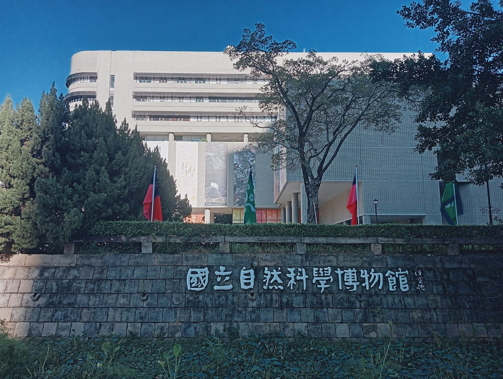
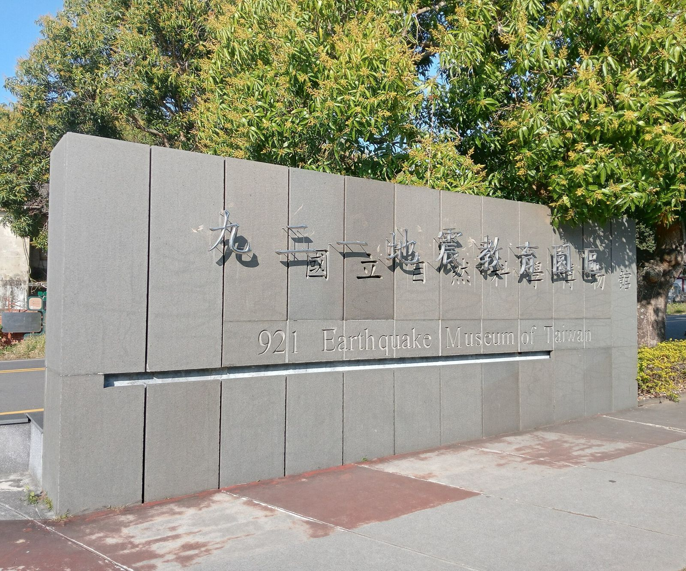
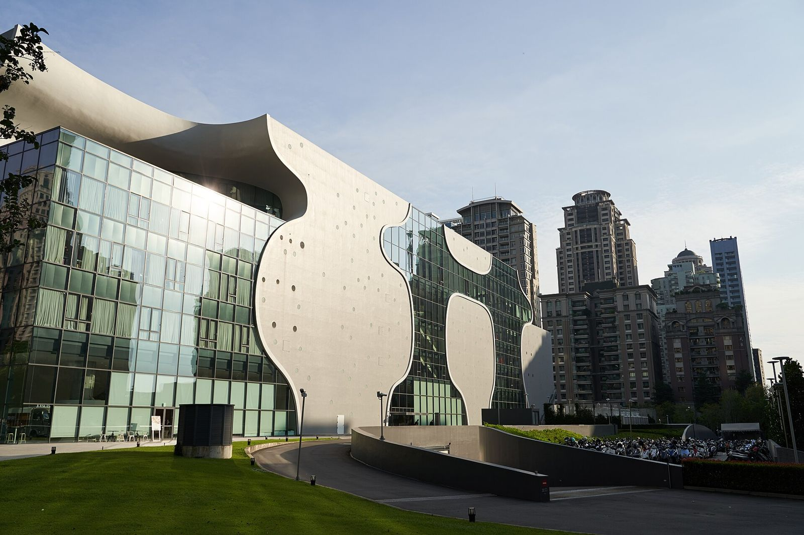

타이중 아이와 갈 곳, 과학박물관·921·가극원 어디부터?
공룡과 우주를 보는 과학박물관, 지진을 배우는 921지진교육원구, 동굴 같은 건물의 가극원까지 — 월요일만 피하면 아이와 하루가 꽉 찹니다.
게시 · 수정
타이중 아이와 갈 곳을 찾으면 국립자연과학박물관, 921지진교육원구, 국가가극원이 자주 함께 나와요. 초등학생과 갈 곳을 묻는 여행자 질문에도 이 세 곳이 추천으로 올라왔습니다. 문제는 세 곳의 문 여는 시간과 위치가 꽤 다르다는 점이에요. 박물관 두 곳은 아침 9시에 열고 가극원은 11시 30분에 열며, 세 곳 모두 월요일에 쉽니다. 각 기관 공식 안내를 바탕으로 2026년 10월 기준 시간과 가는 법, 하루 동선을 정리해봤어요.
01 · 타이중 아이와 갈 곳 세 곳, 한눈에 비교
| 항목 | 국립자연과학박물관 (科博館) | 921지진교육원구 | 국가가극원 (歌劇院) |
|---|---|---|---|
| 위치 | 北區 館前路1號, 시내 | 霧峰區 新生路192號, 시내에서 남동쪽 | 西屯區 惠來路二段101號, 신도심 |
| 개방 (2026년 10월 기준) | 화~일 09:00~17:00 | 화~일 09:00~17:00 | 화~일·공휴일 11:30~21:00 |
| 마감 | 매표 16:30, 입장 17:00 마감 | 매표 16:30, 입장 17:00 마감 | 공중정원은 폐관 15분 전 입장 마감 |
| 쉬는 날 | 월요일(국정공휴일·대체휴일이면 개방), 음력 섣달그믐·설날 | 월요일(국정공휴일·대체휴일이면 개방), 음력 섣달그믐·설날 | 월요일 |
| 아이에게 좋은 점 | 공룡·우주·식물원까지 한곳에 | 지진으로 무너진 학교 건물을 그대로 보존 | 어린이 음성 가이드(6~12세 권장) |
| 요금 | 요금은 방문 전 공식 안내를 확인하세요 | 요금은 방문 전 공식 안내를 확인하세요 | 요금은 방문 전 공식 안내를 확인하세요 |
세 곳을 묶을 때 가장 먼저 볼 것은 월요일 휴관이에요. 박물관 두 곳은 월요일이 국정공휴일이면 문을 열지만 가극원은 월요일 휴관으로만 안내돼 있어서, 아이와 가는 날은 화요일~일요일로 잡는 편이 안전합니다. 또 921지진교육원구는 시내에서 떨어져 있어 과학박물관과 같은 날 묶으려면 이동 시간을 넉넉히 잡아야 해요.

02 · 국립자연과학박물관, 아침 일찍 가면 좋은 이유
9시 개관, 16:30 매표 마감 화~일 09:00~17:00에 열고, 표는 16:30까지만 팔아요. 전시관이 넓어서 오후 늦게 들어가면 다 못 보고 나오기 쉽습니다.
시내 버스로 가기 쉬워요 박물관 공식 안내에 따르면 타이완대로(臺灣大道)를 지나는 300~308번 버스가 타이중역과 이어져요. 시내 숙소라면 버스 한 번으로 닿는 거리예요.
공사·폐쇄 공지 확인 2026년 10월 기준 과학센터 2층 '반도체의 세계' 전시 일부가 시간대별로 닫히고, 생명과학관 지하 1층 화장실은 10월 1일부터 쓸 수 없다고 공지돼 있어요.
11월 28일은 오후만 2026년 11월 28일(토) 투표일에는 본관이 오후 1시~5시만 열어요. 이날 여행이라면 오전 일정을 다른 곳으로 바꾸세요.
초등학생과 타이중에서 갈 곳을 묻는 글에 과학박물관, 국립대만미술관, 국가가극원, 921지진교육원구를 추천하는 답이 달렸어요. — 네이버 카페 여행자 질문글을 요약했어요

03 · 921지진교육원구, 반나절은 따로 잡기
과학박물관 분관이에요 1999년 9월 21일 대지진을 기록한 곳으로, 국립자연과학박물관이 운영하는 원구예요. 개방 시간도 화~일 09:00~17:00, 매표 16:30 마감으로 같습니다.
직행 버스는 없어요 박물관 공식 답변으로는 과학박물관에서 921지진교육원구로 바로 가는 버스가 없어요. 타이중역으로 가서 갈아타야 합니다.
타이중역에서 50번이 편해요 타이중역 퉁롄(統聯) 정류장에서 50번(921지진교육원구행)을 타면 원구 주차장 앞에 서고, 배차도 많은 편이라고 안내해요. 100번 등은 光復新村에서 내려 11분쯤 걸어요.
11월 28일은 하루 휴관 2026년 11월 28일(토) 투표일에는 921지진교육원구가 하루 종일 문을 닫아요.

04 · 국가가극원, 오후와 저녁에 맞는 곳
11:30에 열고 21:00에 닫아요 화~일·공휴일 11:30~21:00이라 박물관을 보고 오후에 넘어가기 좋아요. 옥상 공중정원은 폐관 15분 전에 입장을 막아요.
어린이 음성 가이드 가극원은 건축·식물 음성 가이드와 함께 6~12세 권장 어린이 음성 가이드를 빌려줘요. 지도를 들고 건물 안을 직접 찾아다니는 방식이에요.
MRT 시정부역 1번 출구 타이중 MRT 그린라인 시정부(市政府)역 1번 출구로 나와 시정공원을 따라 10~15분 걸으면 돼요. 타이중역에서는 300~308번 버스로 新光/遠百 정류장에 내려 8분쯤 걷습니다.
야간 도슨트는 수·금 19:00 공식 안내 기준 수·금 19:00에 야간 도슨트가 있고, 대극장 공연이 있는 날은 쉬어요. 참가 방법은 가극원 홈페이지에서 확인하세요.
05 · 아이와 하루 동선 예시
오전: 국립자연과학박물관 9시 개관에 맞춰 들어가면 더위를 피해 실내에서 오전을 보낼 수 있어요.
점심 뒤: 국가가극원 11:30 이후 열리니 점심을 먹고 버스로 이동해요. 두 곳 모두 타이완대로 300번대 버스 노선 근처라 갈아타기가 단순합니다.
다른 날 오전: 921지진교육원구 타이중역에서 50번 버스로 따로 반나절을 잡아요. 월요일과 2026년 11월 28일만 피하면 돼요.
타이중 공항으로 들어오고 나가는 일정이라면 타이중 공항 출국 팁을, 타이난까지 이어 간다면 타이중→타이난 일반열차 vs 고속철을 함께 보세요. 아이와 하루 더 쓸 수 있다면 장화의 팔괘산 하늘놀이터도 가까워요. 박물관 사이에 먹을 곳은 타이중 맛집 지도, 타이중 체험·관광지, 더운 날엔 타이중 빙수 맛집에서 골라 보세요. 간단한 한 끼로는 왕왕 몐셴후(王罔麵線糊)도 있어요.
지도에서 타이중 체험·관광지도 확인해보세요
박물관 사이에 들를 곳과 근처 먹을 곳을 지도에서 미리 골라 보세요.